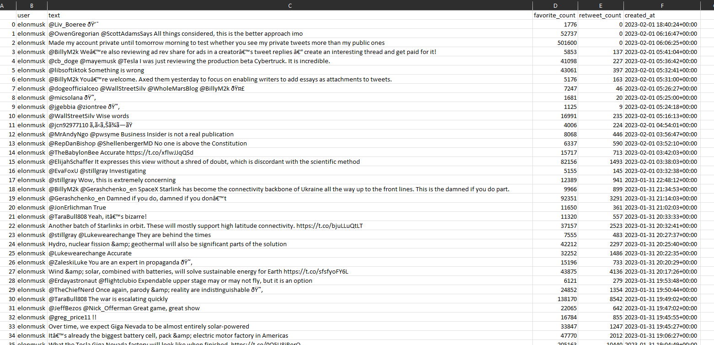
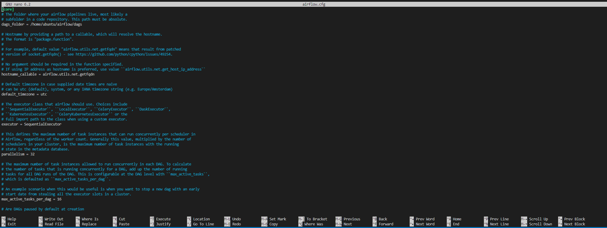
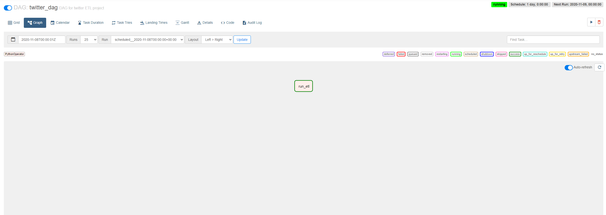
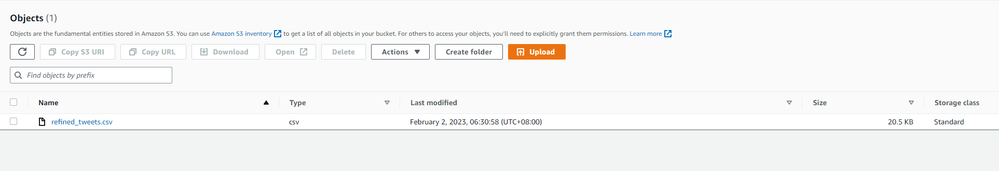

Twitter ETL Pipeline using Airflow
Overview
In this Project, I built a data pipeline to scrape through tweets using tweepy, do basic data cleaning and load it onto AWS EC2 cloud instance. The data are stored in S3 bucket and orchestrated automatically using Apache Airflow.
Figure 1: Overview of ETL data pipeline
These are the steps required to configure our pipeline:
- Data Extraction - To make this simple, I decided to scrape only 200 latest tweets from @elonmusk. We can always change this step to make more complex filtering to get whatever data that we desire.
- Data Transformation - Changing the format of data from JSON to dictionary and populate them into csv file.
- Data Orchestration - Use AWS EC2 for cloud server. For orchestration, I use Apache Airflow to schedule tasks, so that I can update data as per my schedule.
- Data Loading - Upload the csv file onto cloud instance, in this case, AWS S3 bucket.
Requirements
- Apache Airflow
- EC2 instance (atleast t3.medium because we need to run Airflow which requires atleast 4 GB of memory)
- Twitter API Access
- Python package used:
-tweepy
-pandas
-json
-s3fs
Data Extraction
First we need an access to twitter API which can be requested here. You might need to state the reasons for requesting access in order for your request to be approved. Once you have access, the steps to connect to the API endpoint is straightforward.
We need the API access key and consumer key. The access key is for the server side key while the consumer key is for the client side. These can be generated from Twitter.
Store the API and secret key into another separate python file in the same folder. For instance, in this project, the API key are stored in another file named keys with variable name twitter_API_key. To pass the value, we simply call the function from keys. Refer to code.
To connect to the endpoint, we need to use the OAuthHandler method to pass in our twitter access key and secret. Then we use the set_access_token method to pass in our client-side key. Finally, we just have to pass the authenticator as an argument to the API method. This completes our connection. Refer to Tweepy docs for more information.
Code:
1#configuring twitter API access
2access_key = keys.twitter_API_key
3access_secret = keys.twitter_API_key_secret
4consumer_key = keys.twitter_access_token
5consumer_secret = keys.twitter_access_token_secret
6
7#authentication
8auth = tweepy.OAuthHandler(access_key, access_secret)
9auth.set_access_token(consumer_key, consumer_secret)
10
11#create API object
12api = tweepy.API(auth)
Now that we are connected to twitter, we can scrape our data. To make it simple, I only want latest 200 tweets from @elonmusk. We can use the user_timeline method to get tweets from a specific user’s timeline.
Code:
1tweets = api.user_timeline(screen_name='@elonmusk', count=200, include_rts = False, tweet_mode = 'extended')
2# tweet_mode is set to extended to get full text, otherwise we will only get max 140 words.
By default, twitter will pass data to us in JSON format. It’s up to us to interpret this data. As per image below, a quick print of the above results gave us this alien language. This data needs to be cleaned later into a more convenient format.
Data Transformation
I am only interested in the actual tweet, and perhaps some other metrics like username, retweet counts, date. I wanted to store these data in a more readable format, so I decided to use Python list to store and populate the data into a table using Pandas, and finally store the table into a csv file. The following code will do just that.
Code:
1tweet_list = []
2 for tweet in tweets:
3 text = tweet._json["full_text"]
4
5 refined_tweet = {"user": tweet.user.screen_name,
6 'text' : text,
7 'favorite_count' : tweet.favorite_count,
8 'retweet_count' : tweet.retweet_count,
9 'created_at' : tweet.created_at}
10
11 tweet_list.append(refined_tweet)
12
13 df = pd.DataFrame(tweet_list)
14 df.to_csv('refined_tweets.csv')
And that concludes my simple transformation. The result of transformed data is as per below. Now we need to upload this file to the cloud, and schedule tasks to do the same thing each day or any time interval that we want, we will use Airflow for that.

Connecting to EC2 Machine
For setting up EC2 instance, read here. Once an EC2 instance is created, AWS will generate a key. To connect to EC2 instance, click ‘connect’ on the EC2 instance and copy the command to initiate EC2 machine and paste it to terminal.
Once connected, we need to install all dependencies that we need to run our program. These are:
1sudo apt-get update
2sudo apt install python3-pip
3sudo pip install apache-airflow
4sudo pip install pandas
5sudo pip install s3fs
6sudo pip install tweepy
EC2 machine is now ready. Next, to run Airflow onto this machine.
Data Orchestration
The default port used for Airflow is the 8080 port. Once the Airflow is running, we can access Airflow by copying my EC2 public DNS and pasting it to browser and adding ‘/8080’ to the path. The Python file (run_etl.py) created for data extraction and transformation needs to be copied and uploaded to Airflow directory in EC2 machine. And I need to create a new folder to store these scripts, I created twitterDAG folder and put the python file here. To make sure airflow is running correctly, we need to specify to airflow as to where to find these files. To do this, I used nano bash editor and access airflow.config file and change dag_folder directory name to my desired folder name, in this case twitterDAG. This will make Airflow use this directory when running.
1sudo nano airflow.config

If everything is okay, we should be able to see twitterDAG name in the list of dags in Airflow.
Creating DAG file
DAG file is basically the orchestration file to instruct Airflow on how the program should be run. Read here for more information about DAGs. 3 key things to have in a DAG are:
- default_args - specifies the DAG arguments.
- DAG - the DAG object itself, this object will take default_args as its arguments.
- tasks - these are the tasks that we want Airflow to run
My DAG program is very basic with all these 3 things in it (refer code). Tasks can also be ordered. But for this project, I only wanted to do one task which is to run my python script (which includes extraction and tranformation) and then upload the file to S3 bucket.
Code:
1from datetime import timedelta
2from airflow import DAG
3from airflow.operators.python_operator import PythonOperator
4from airflow.utils.dates import days_ago
5from datetime import datetime
6from Twitter_airflow_project import run_etl
7
8default_args = {
9 'owner': 'hisyam',
10 'depends_on_past': False,
11 'start_date': datetime(2022, 8, 12),
12 'email': ['hisyamimran1996@gmail.com'],
13 'email_on_failure': True,
14 'email_on_retry': True,
15 'retries': 1,
16 'retry_delay': timedelta(minutes=1)
17}
18
19dag = DAG(
20 'twitter_dag',
21 default_args=default_args,
22 description='DAG for twitter ETL project',
23 schedule_interval=timedelta(days=1),
24)
25
26dag_run_etl = PythonOperator(
27 task_id='run_etl',
28 python_callable=run_etl,
29 dag=dag,
30)
31
32dag_run_etl
The PythonOperator is used to execute Python callables. I scheduled the schedule_interval to be 1 day, meaning that the DAG will run everyday at the same time as I run the previous day. the task dag_run_etl will run the python file named run_etl which is the file for data extraction and data transformation. This DAG file needs to be copied and paste into airflow directory in EC2 machine too.
If everything is good, our DAG should be able to run. The DAG will have a green border if it’s successfully deployed.

Data Loading
I load the data to an S3 bucket. To do this, create a new bucket and copy the name of the bucket. Paste the name preceded with s3:// into the destination file when we created csv file earlier:
1df.to_csv('s3://{bucket_name}/refined_tweets.csv')
And we’re done!

The pipeline is successfully deployed in a CLoud Environment.
Further Development Ideas
Obviously there’s no reason for me to get tweets from @elonmusk. This workflow can be the basis for other more sophisticated system. For example we can apply statistical analysis for word counts, take stocks for instance, we can scrape twitter data of stock names mentioned in twitter and apply some analysis to see trending stocks, and update this metrics everyday. This can be served as sentiment analysis, wherein if there’s a spike in stock mentions, we can detect that and see how it correlates to market movement. From here, we opens up a lot of other analytical ideas like measuring correlation between twitter mentions vs price action etc.
Those are some examples. But the workflow should be generally similar, just the complexity of codes and data size will be different.
Source Code
You can find the codes in my GitHub.